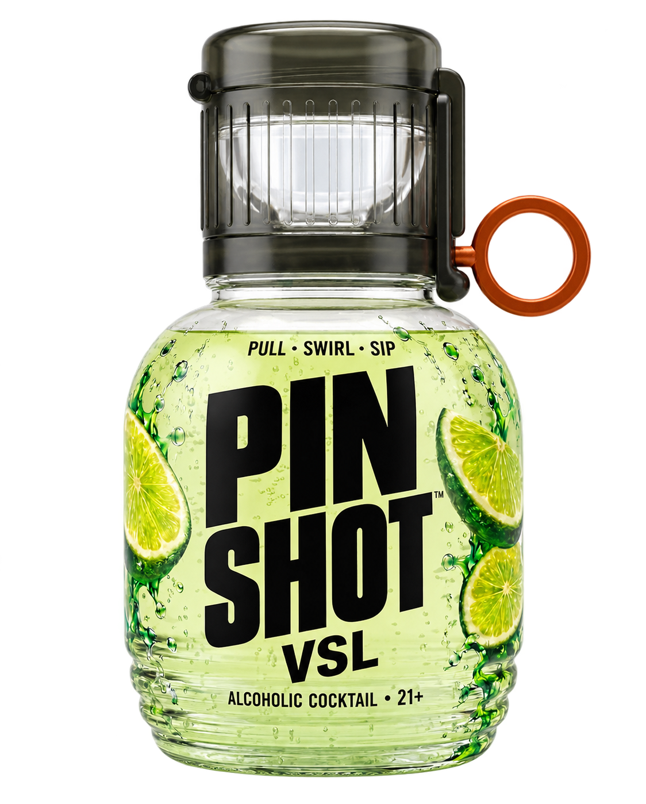
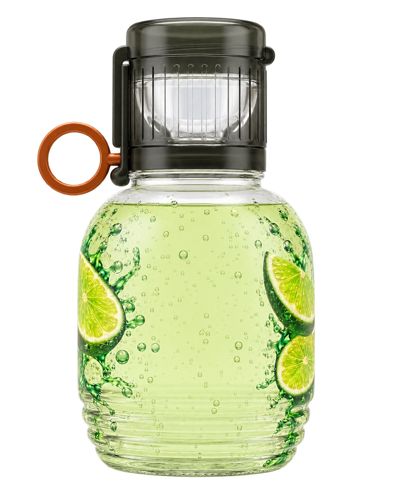
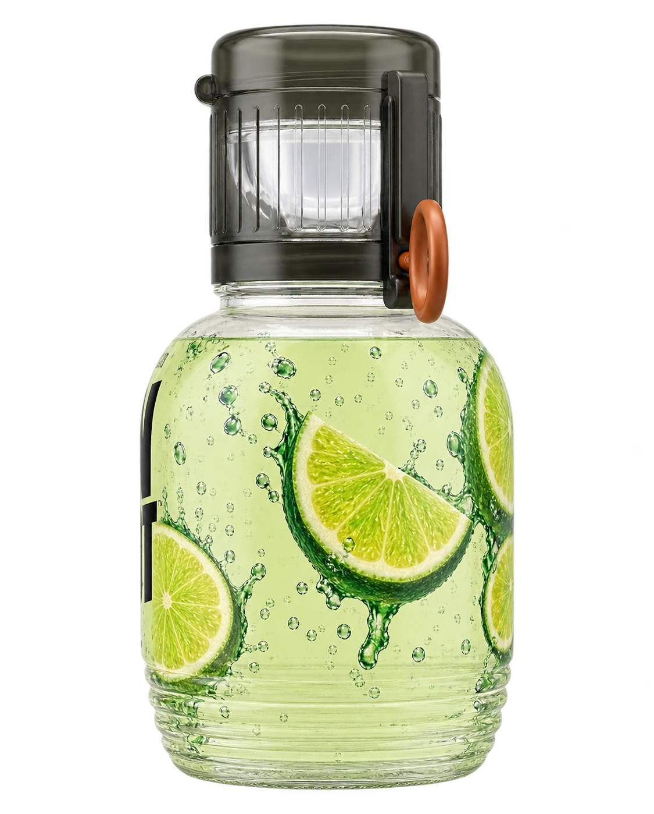
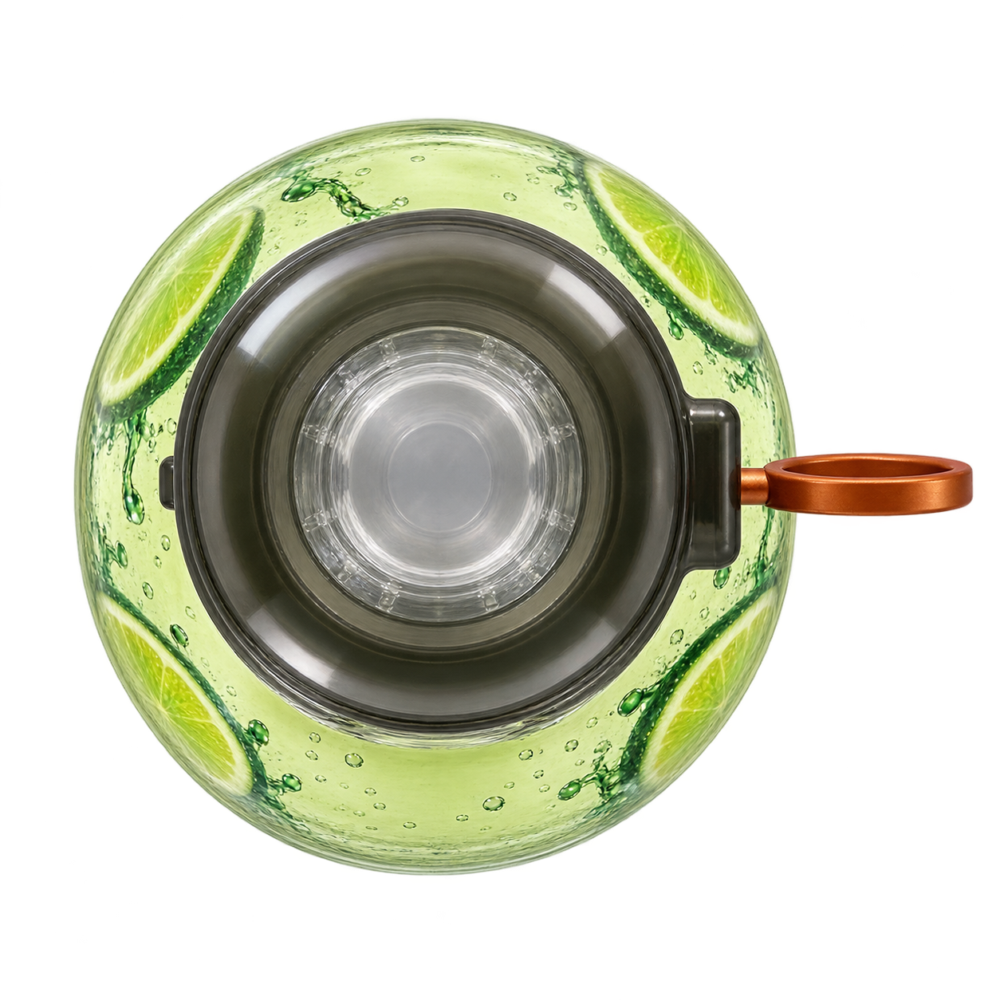
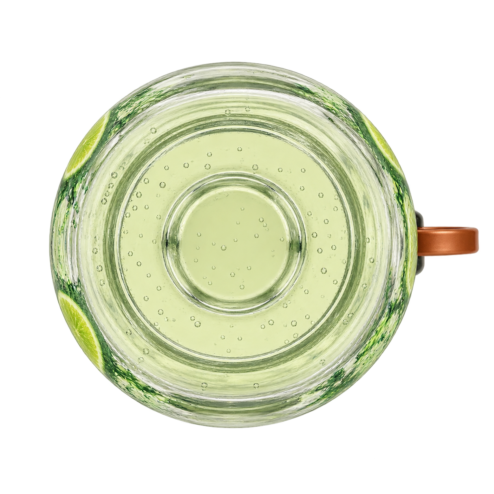
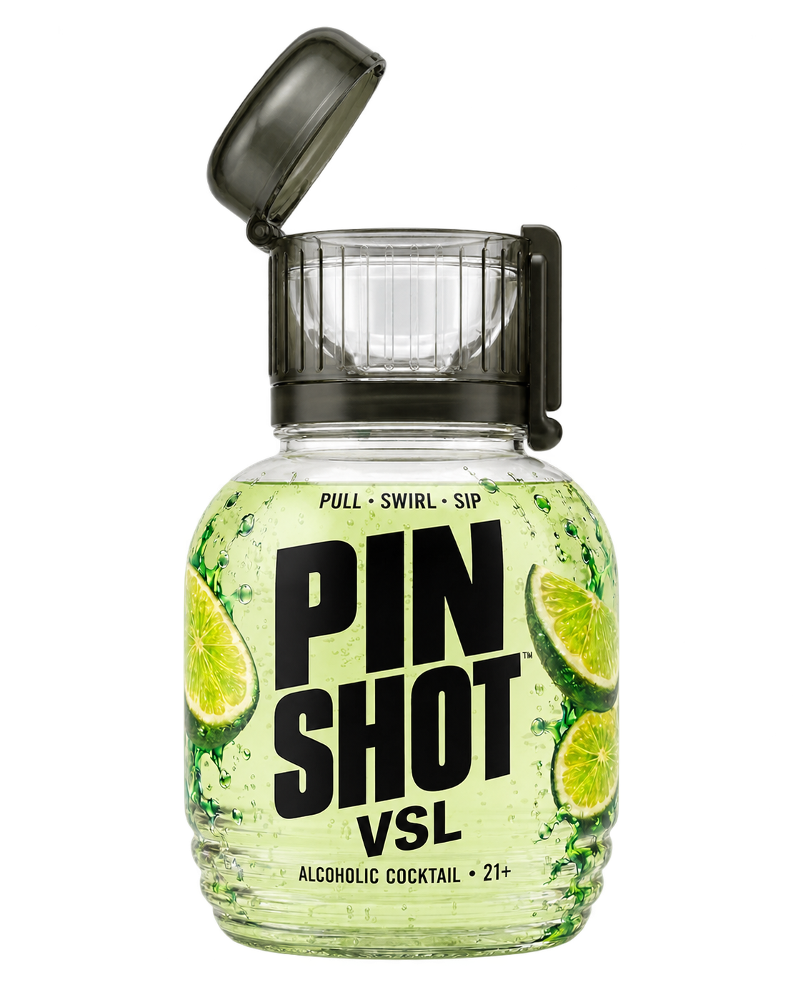
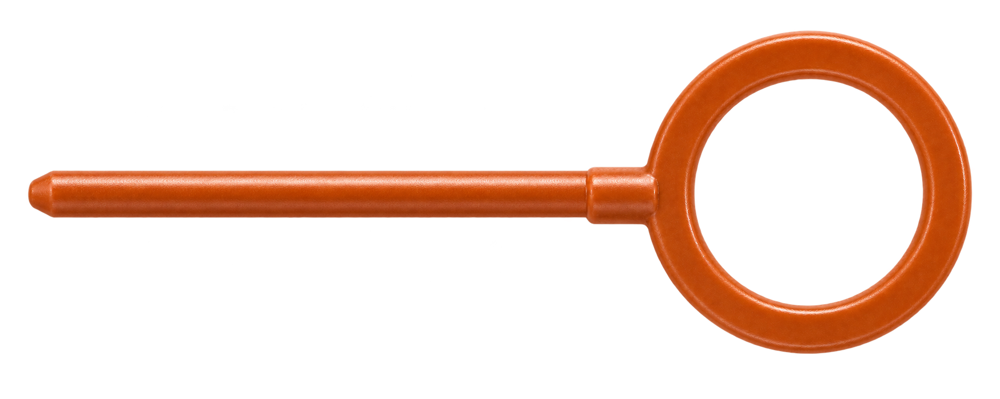

Seven reference-based PNG assets with transparency. Hidden surfaces and the open interior are inferred, so these are visual recreations rather than exact geometric reproductions.
Original reference · Generation prompts






